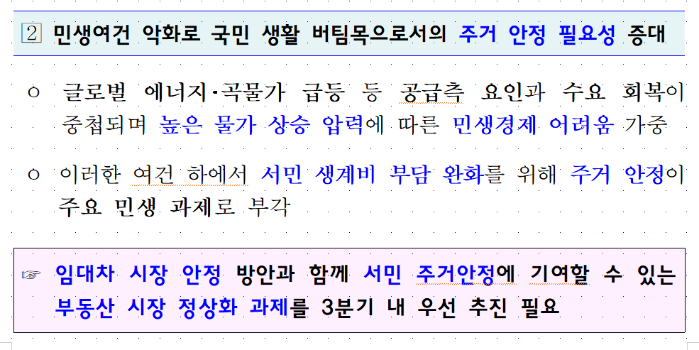
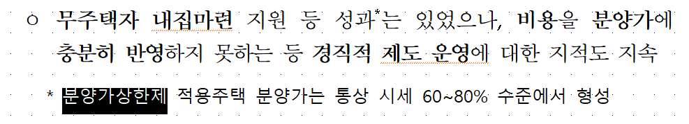
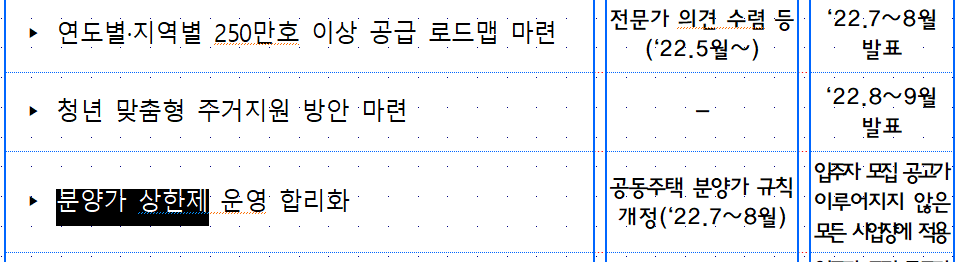
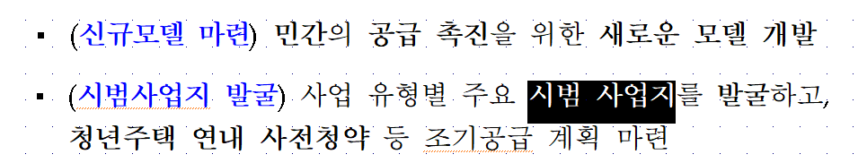
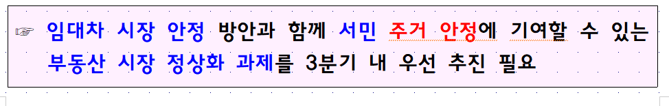
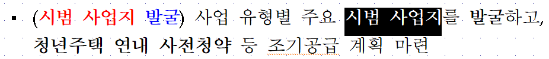

from hwpapi.core import App
app = App()
app.open("hwps/220621(안건_1,2)임대차_시장_안정_및_3분기_부동산_정상화_방안.hwp")Find and replace
찾아바꾸기를 활용한 파이썬 자동화 사례
문제설정
문서 작업을 하면서 같은 의미지만 다르게 작성하여 형식을 통일하기 위해 문서를 처음부터 검토해야 하는 경우가 있습니다. 예를 들어 “2022년”이라고 쓰는 경우도 있고 “’22년”으로 적는 경우도 있습니다. 이를 모두 2022년으로 작성 방식을 통일하고자 한다면 찾아바꾸기를 통해 쉽게 달성할 수 있습니다.
만약 이런 바꿔야 하는 단어가 수십개가 된다면 어떻게 될까요? 붙여써야 하는 경우, 자주 틀리는 오탈자, 영문명으로 바로 작성하거나 이니셜로만 작성하는 등, 수십개의 케이스를 모두 적용하는 것은 상당히 귀찮고 오류가 발생하기 쉬운 일입니다.
이런 문제를 hwpapi를 사용해 해결해 보고자 합니다.
국토부 보도자료를 보면 임대차 시장 안정 및 3분기 부동산 정상화 방안이라는 문서를 볼 수 있습니다.
여기서 보면 ’주거 안정’이라고 띄어 쓴 경우와 ’주거안정’이라고 붙여쓴 경우가 있습니다. 
유사하게 ’분양가 상한제’와 같이 띄어 쓴 경우와 ’분양가상한제’라고 붙여 쓴 경우가 있죠.  
또한 ’시범사업지’와 ’시범 사업지’와 같이 경우에 따라 붙이거나 띄는 경우는 한국어 특성상 자주 발생합니다. 
이런 항목을 모두 붙여 쓰는 스크립트를 짜보도록 하겠습니다.
해야 할 일은
- 문서 불러오기
- 기존과 변경할 것 목록 만들기
- 찾아 바꾸기
이렇게 3단계로 구성됩니다.
문서 불러오기
우선 패키지를 불러오고 문서를 불러 옵니다. 저는 hwps/220621(안건_1,2)임대차_시장_안정_및_3분기_부동산_정상화_방안.hwp 파일을 읽어 오겠습니다.
기존 단어와 변경할 단어 목록 만들기
아래와 같이 기존 단어와 변경할 단어를 만들어 둡니다. 여기서는 단순히 list를 사용했지만, pandas 등을 사용하면 엑셀 파일에서 관리할 수 있습니다.
words = [("분양가 상한제", "분양가상한제"), ("주거안정", "주거 안정"), ("시범사업지", "시범 사업지")]찾아바꾸기
이렇게 까지 되면 나머지는 간단합니다. words를 순환 하면서 반복해 주기만 하면 됩니다. 모두 찾아바꾸기를 하면 어디를 바꾸었는지 확인하기 어렵기 때문에 바꾼 단어는 붉은 색으로 처리해서 쉽게 눈으로 확인해 볼 수 있게 하겠습니다. 그러기 위해서 CharShape이라고 하는 dataclass를 불러오겠습니다.
from hwpapi.dataclasses import CharShape
for old, new in words:
app.replace_all(old, new, new_charshape=CharShape(text_color="#FF0000"))코드를 실행하고 나면 아래와 같이 바뀐 단어는 붉은색으로 표시되게 됩니다.  
이렇게 변경된 사항을 눈으로 확인하고 최종적으로 단축키 등으로 정리하면 문서 전체적으로 맞춰야 하는 단어나 자주 틀리는 오탈자를 쉽게 관리 할 수 있게 됩니다.
app.move("DownOCell")dir(app.api)app.api.KeyIndicator()app.api.KeyIndicator()dir(app.api.ParentCtrl)